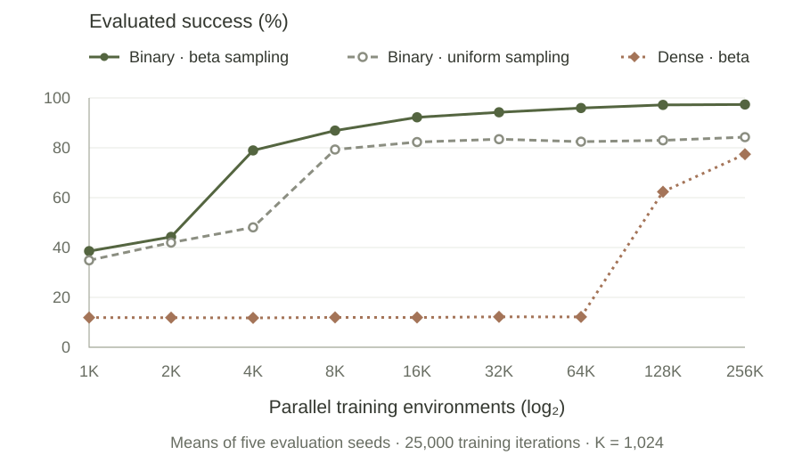

A shared task objective
From individual parts
to assembly sequences.
AlphaNIST studies how reinforcement learning can learn assembly without prescribed manipulation stages. We investigate a shared policy across component types, then separately trained policies for multi-component tasks.
Twenty single-component tasks
One shared policy across different assembly geometries.
Ten-component sequences
A separately trained policy; selected successful rollouts.
01 / Manipulation
A grasp is not always
ready for insertion.
The shape of the part and its mating surface constrain how it can be held. These sequences show the policy changing a grasp or using contact with the board before assembly.

The gripper releases the center-held peg and grasps nearer its end, leaving more of the peg exposed for insertion.
02 / Learning setup
Where does useful
experience come from?
A cached bank spans loose parts, held parts, and partial assemblies. These starting states provide opportunities to learn different portions of the task; they are not action demonstrations.
Policy input: point clouds and robot state.
03 / Evaluation
Changing one ingredient
at a time.
With the full method as the reference, we add reaching-and-alignment reward shaping, or replace beta sampling with uniform sampling. The evaluation setup is shared across these comparisons.

Single-component evaluation · 19 tasks · Same frozen mixed-reset bank
Evaluated success at 256K environments
- Binary reward + beta sampling
- 97.4%
- Added dense shaping
- 77.4%
- Uniform sampling instead of beta
- 84.3%
Evaluation conditions
These checkpoints are evaluated at 25,000 training iterations, with 32 trials per task for each of five evaluation seeds. M4 nut threading is excluded. Starting states include partial assemblies. Any uncertainty shown is variation across evaluation seeds, not independently trained policies. Parallel environments, rollout batch size, GPUs, and total training experience increase together; compute is not matched across scales. Dense shaping adds the tested reaching and alignment terms to the binary task reward and unchanged control costs.
04 / Multi-component extension
Other parts change
the available motions.
For multi-component training, the task reward requires all active parts to be assembled. In these selected runs, the policy moves parts aside and adjusts its manipulation around already assembled components.
Choose a moment, or play the full montage.
The stages are learned,
not specified in advance.
The examples connect precise contacts with longer assembly sequences. The quantitative study and selected demonstrations address different parts of that question: measured single-component performance, and observed multi-component coordination. Both are studied in simulation.